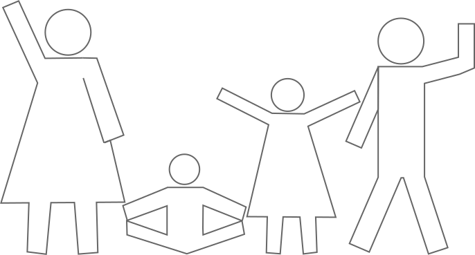

<mat-card class="card">
   <mat-card-header>
      <mat-card-title>Familie Toevoegen</mat-card-title>
   </mat-card-header>
   <mat-card-content class="card-content">

      <!-- Mat-Stepper -->
      <mat-horizontal-stepper linear #stepper>

         <!-- Mat-Step -->
         <ng-container *ngFor="let wizardStep of wizardSteps; index as i">
            <mat-step>
               <ng-template matStepLabel>{{ wizardStep.stepLabel }}</ng-template>

               <!-- Mat-Step Body-->
               <div class="mat-step__body">

                  <!-- Background Images -->
                  <ng-container *ngIf="i == 0">
                     <div class="body__img-container">
                        
                     </div>
                  </ng-container>

                  <ng-container *ngIf="i == wizardSteps.length - 1">
                     <div class="body__img-container">
                        
                     </div>
                  </ng-container>

                  <!-- Mat-Step Top Text-->
                  <div class="body__top-text">
                     <p>{{ wizardStep.topText }}</p>
                  </div>

                  <!-- Mat-Step Content-->
                  <div *ngIf="i > 0 && i < wizardSteps.length - 1" class="body__step-content">

                     <!-- LegalGuardian UserCards -->
                     <div class="step-content__legalguardian-user-cards">

                        <div class="legalguardian-user-cards__label">
                           Voogden:
                        </div>

                        <ng-container *ngFor="let legalGuardian of legalGuardians; index as j">
                           <app-detailed-user-card [user]="legalGuardian" [colorOption]="j"
                              (edit)="editLegalGuardian(legalGuardian)">
                           </app-detailed-user-card>
                        </ng-container>

                     </div>

                     <!-- Mat Content Divider -->
                     <div *ngIf="i > 1 && i < wizardSteps.length - 1" class="step-content__divider">
                        <div class="divider__line"></div>
                     </div>

                     <!-- CareUser UserCards -->
                     <div *ngIf="i > 1 && i < wizardSteps.length - 1" class="step-content__careuser-user-cards">

                        <div class="careuser-user-cards__label">
                           Zorggebruikers:
                        </div>

                        <ng-container *ngFor="let careUser of careUsers; index as k">
                           <app-detailed-user-card [user]="careUser" [colorOption]="k"
                              (edit)="editCareUser(careUser)">
                           </app-detailed-user-card>
                        </ng-container>

                     </div>

                     <!-- Add User Button -->
                     <ng-container *ngIf="wizardStep.addButtonText != ''">
                        <div class="body__button-add" (click)="handleAddButtonClick(i)"
                           (keydown.enter)="handleAddButtonClick(i)" tabindex="0">

                           

                           <span class="body__button-add__text">{{ wizardStep.addButtonText }}</span>

                        </div>
                     </ng-container>

                  </div>

                  <!-- Mat-Step Navigation Buttons-->
                  <div *ngIf="wizardStep.backArrow" class="body__button-back">
                     <button mat-icon-button (click)="moveStepperBackward()">
                        <mat-icon>arrow_back</mat-icon>
                     </button>
                  </div>

                  <div *ngIf="wizardStep.middleButtonText != ''" class="body__button-middle">
                     <button mat-raised-button (click)="handleMiddleButtonClick(i)"
                        color="primary">{{ wizardStep.middleButtonText }}</button>
                  </div>

                  <div *ngIf="wizardStep.forwardArrow" class="body__button-forward">
                     <button mat-icon-button (click)="moveStepperForward()">
                        <mat-icon>arrow_forward</mat-icon>
                     </button>
                  </div>

               </div>
            </mat-step>
         </ng-container>

      </mat-horizontal-stepper>

   </mat-card-content>
</mat-card>
